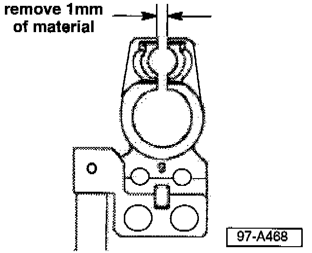

Battery Cable Clamp - Will Not Tighten On Post
Group: 27Number: 97-01
Date: Jan. 10, 1997
Subject:
Battery Cable Clamp, Will not Tighten
Model(s):
Golf, GTI, Jetta 1997 -->VIN: VM035243
Condition
Battery Cable Clamp will not tighten on battery post.
Service
Condition may be caused by an undersized B+ or ground (GND) post on battery.
If a vehicle exhibits this condition DO NOT replace battery. Modify the battery cable clamp(s) as follows:
- Obtain customer's radio code and preset radio stations.
- Determine whether battery (B+) or ground (GND) cable will not tighten sufficiently.
- Remove ground (GND) cable from battery.

- Using a file, remove 1 mm of material from cable clamp (to increase clamping force).
- Reinstall battery cable, torque to 8 Nm (71 in. lb).
- Reinstall battery ground (GND) cable (if necessary), torque to 8 Nm (71 in. lb).
- Re-code radio and reset customer's radio stations.
When procedure applies to vehicles within warranty use the following:
Part Identifier: 2706
Labor Operation: 2706510 10 TU